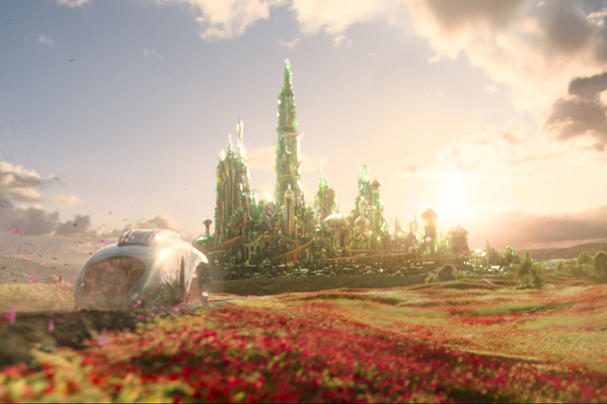

The Emerald City is the social, political, military, and economic imperial capital of the Land of Oz. The city is also located in the exact center of the land and is the nation's largest and most significant settlement. It's home to the Wizard and where Glinda later moves to. It is said to be so bright that visitors and locals need emerald glasses to see.